Week 2 2D & 3D Design making
I tried to design Computer-Aided Design
Rasters and Vectors
· What is a raster?
Raster images, also known as bitmaps, are comprised of individual pixels of color. Each color pixel contributes to the overall image.Raster images might be compared to pointillist paintings, which are composed with a series of individually-colored dots of paint. Each paint dot in a pointillist painting might represent a single pixel in a raster image. When viewed as an individual dot, it’s just a color; but when viewed as a whole, the colored dots make up a vivid and detailed painting. The pixels in a raster image work in the same manner, which provides for rich details and pixel-by-pixel editing
· What is a vector image?
Unlike raster graphics, which are comprised of colored pixels arranged to display an image, vector graphics are made up of paths, each with a mathematical formula (vector) that tells the path how it is shaped and what color it is bordered with or filled by.Since mathematical formulas dictate how the image is rendered, vector images retain their appearance regardless of size. They can be scaled infinitely. Vector images can be created and edited in programs such as Illustrator, CorelDraw, and InkScape (don’t worry, these visual editors do the math for you).
· Illustrator:
I chose illustrator to work on vector files as I am familiar with photoshop and hope that using tools in illustrator would be easy. Illustrator is a product of Adobe

Download Tutorial
· Steps
-
This is the home page for illustrator.
I decided to create icons of my daily activities in illustrator. First I made a rough sketch of what I wanted to do. Then in illustrator made a new file and inserted this drawing to trace over
Create New File
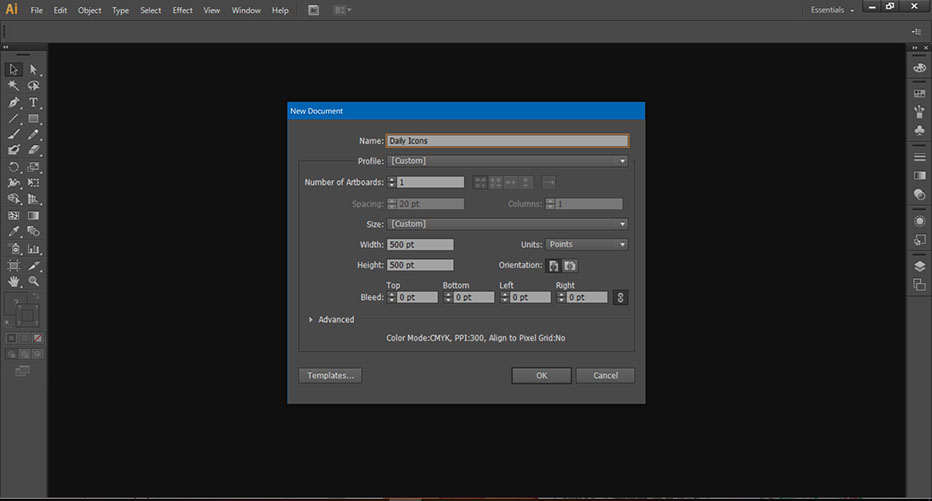
Added sketch to file
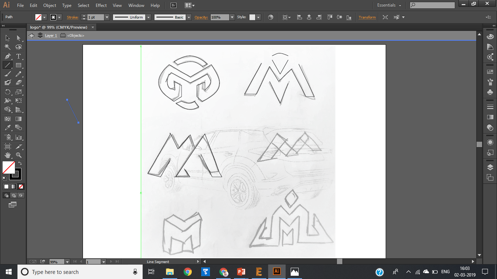
I used mostly the line tool, arc tool to do the tracing. It was quite challenging in the beginning and the tools were actually quite different from photoshop. After a while getting the hang of the software. Once I was done tracing this was the result.
Tracing the sketch with line and pen tool
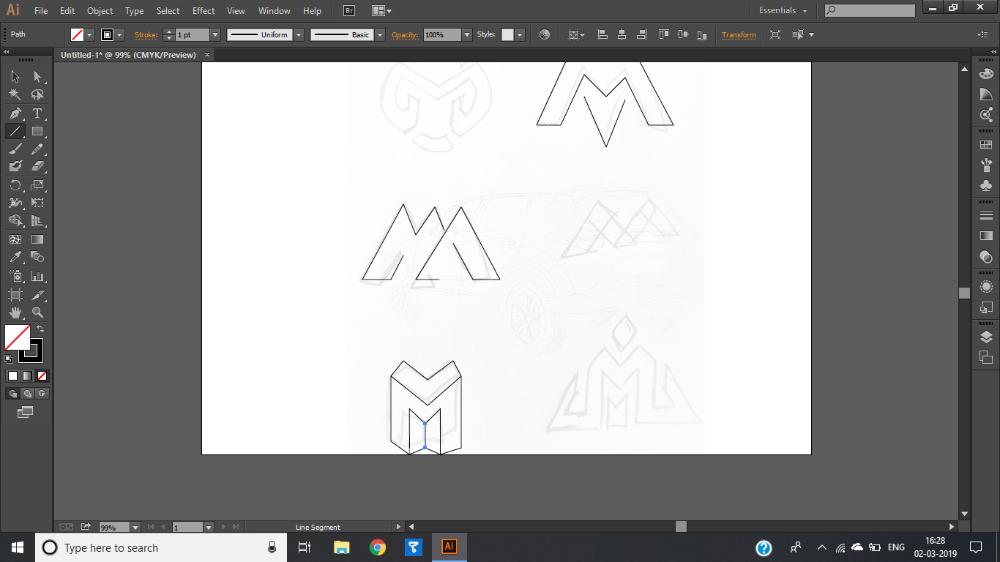
I Realized that it looked blank and needed composition. So I started composing the icons and added some infills, like line and spirals to make it more presentable. This was the final output
After Sketching was Done
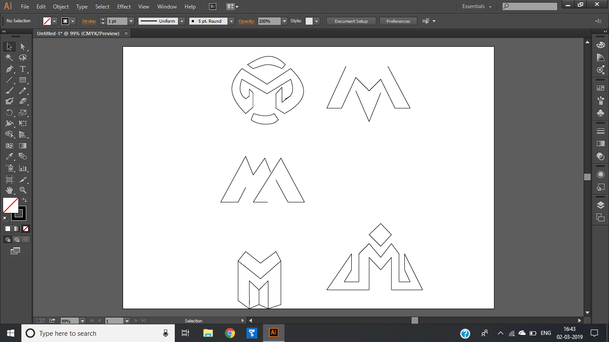
And of the all design i choose one of this logo.
Additional elements
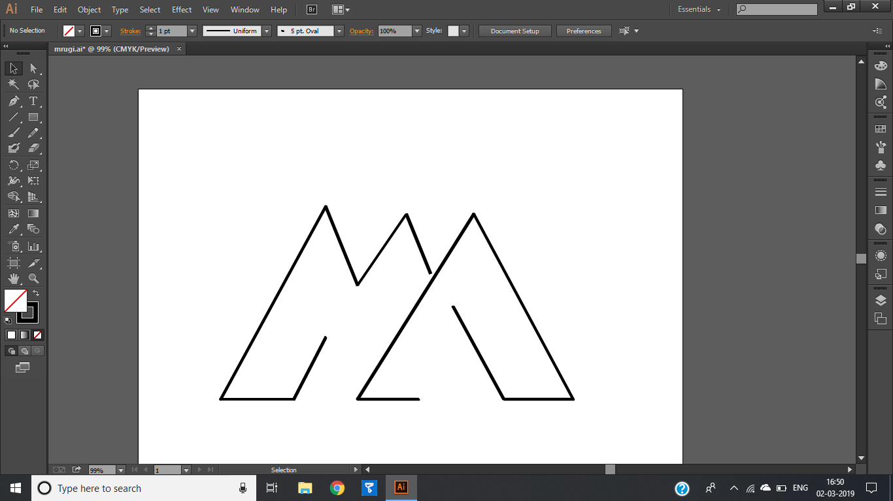
· Inkscape:
Inkscape is a free and open-source vector graphics editor. This software can be used to create or edit vector graphics such as illustrations, diagrams, line arts, charts, logos and complex paintings.

Download Tutorial
· Steps
-
This is the home page for inkscape.
I decided to give a attractive look to my logo so i put shaded color to my design. so i use this it is just like a paint but it is very usefull
Create New File
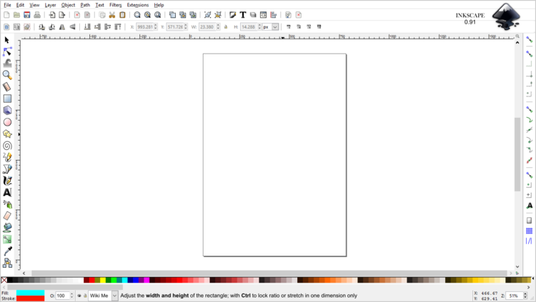
Added design to file
I used mostly the line tool, arc tool to do the tracing. It was quite challenging in the beginning. After a while getting the hang of the software. I started drawing the lines and put the colors. Once I was done tracing this was the result.
Tracing the sketch with line and pen tool
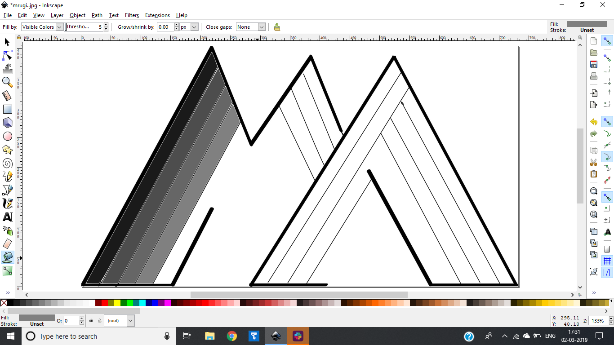
Finally i put in to the shaded colors. This was the final output
Additional elements
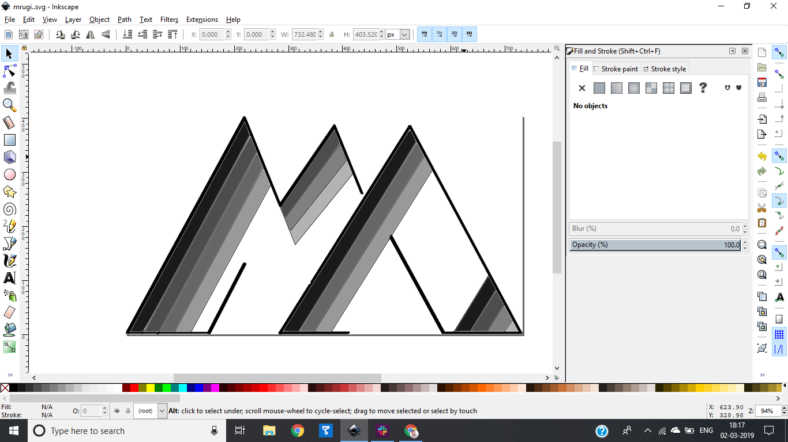
· Tinkercad:
Tinkercad is an easy, browser-based 3D design and modeling tool for all. Tinkercad allows users to imagine anything and then design it in minutes.
Online Tutorial
· Steps
-
This is the home page for TinkerCAD
In this we have to put redymade model or design they provide us. and if we want to use this model or shape make a new one than we can change it to. Then in tinkerCAD made a new file and inserted this drawing to trace over
Create New File
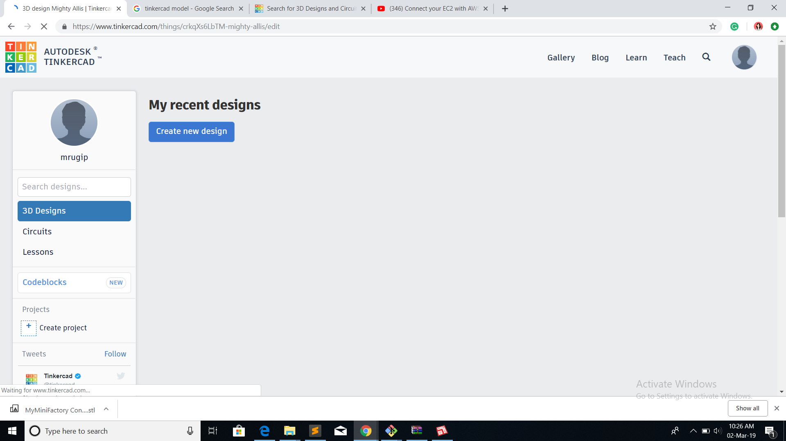
Basic designer models
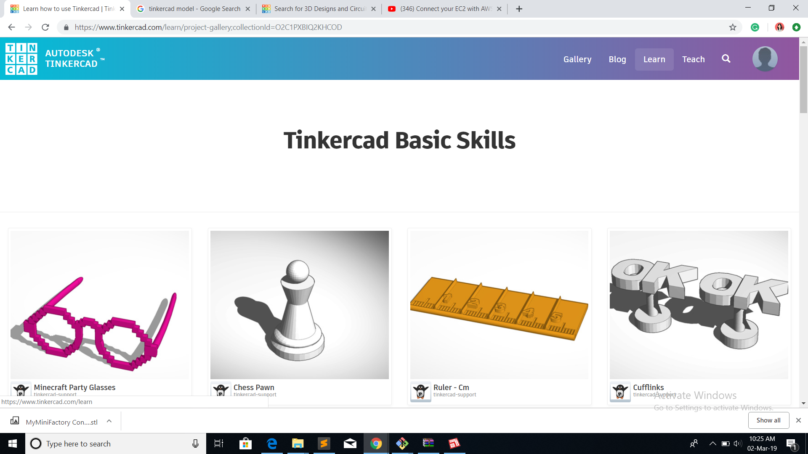
In this part i just put the model or we can say import file and doing few changes. After a while getting the hang of the software. Once I was done tracing this was the result.
Tracing the model in this
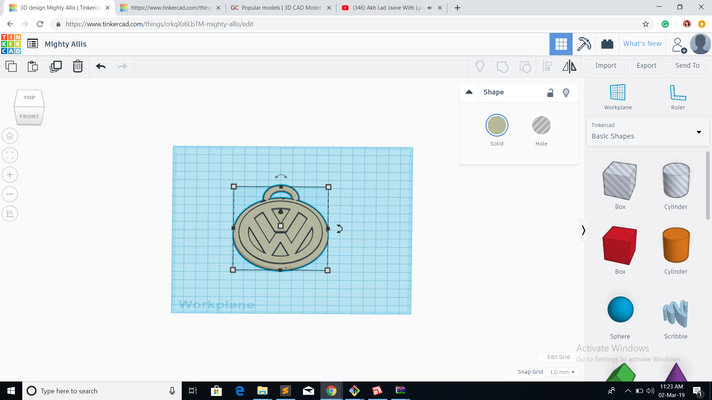
· Fusion360:
3D CAD reinvented. Fusion 360TM is the first 3D CAD, CAM, and CAE tool of its kind. It connects your entire product development process in a single cloud-based platform that works on both Mac and PC.
Download Tutorial
· Steps
-
This is the home page for Fusion360. 360TM is the first 3D CAD, CAM, and CAE tool of its kind. Think, Learn, Create, and solve.
I
Create New File
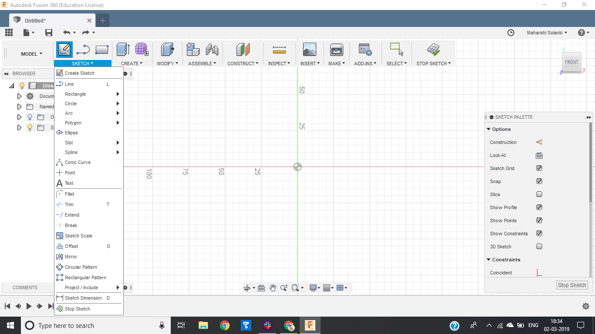
-
I used mostly the line tool, arc tool to do the tracing. It was quite challenging in the beginning and the tools were actually quite different from photoshop.in this i making one bottle. After a while getting the hang of the software. Once I was done tracing this was the result.
I
Use tool and make design
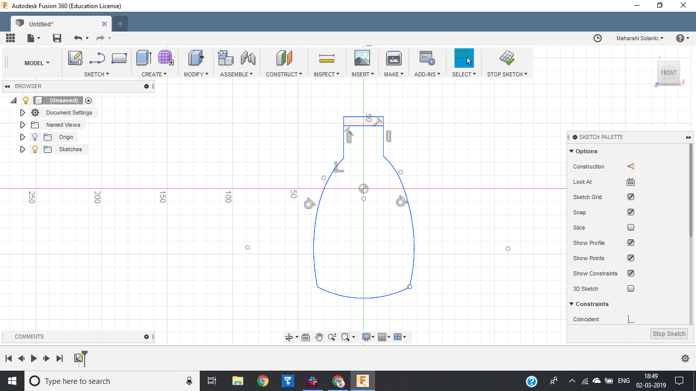
In this i modify my design. i Extrude my bottpe top and etc.
Tracing the sketch with line and pen tool
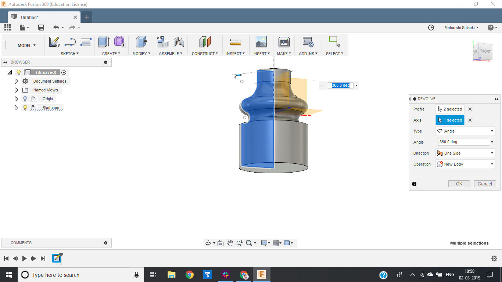
This is a final design of my bottle.
Additional elements
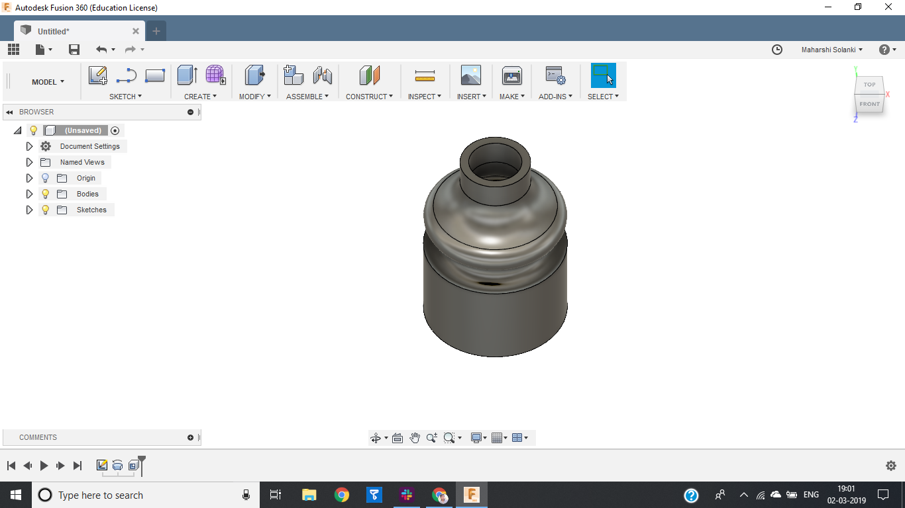
Then i make one another design is pen holder.
Pen holder
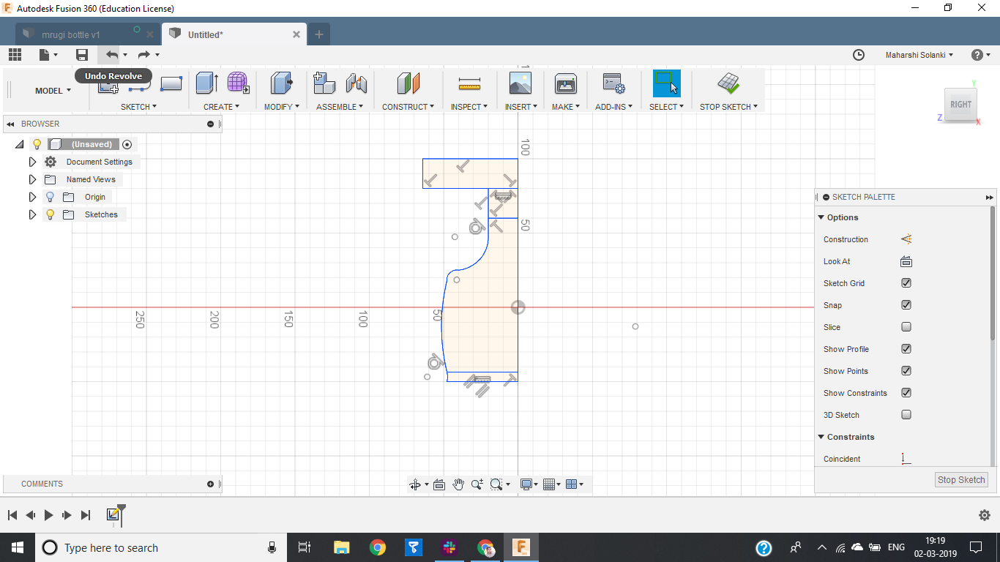
This a final design of my pen holder.
Final design
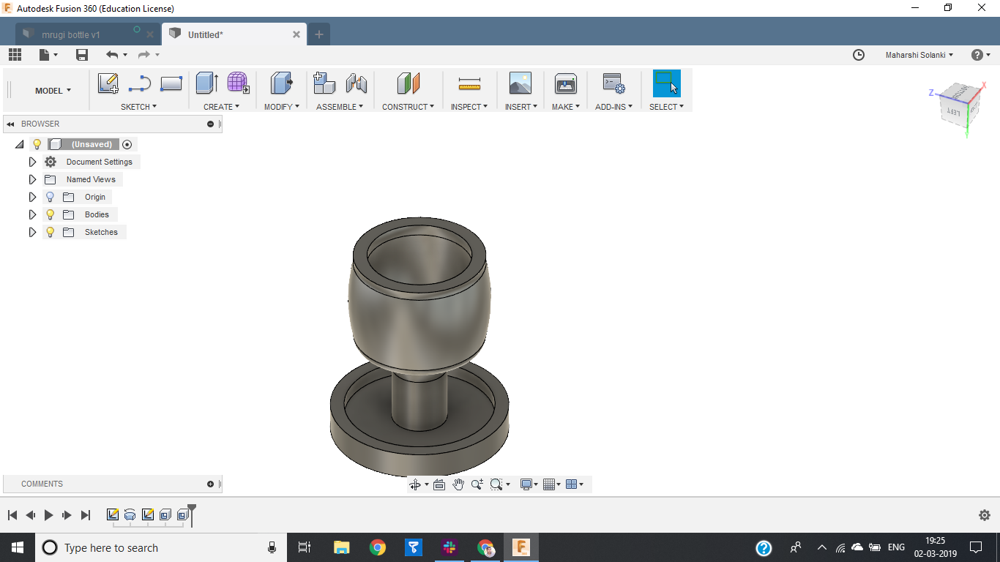
process of my web
About Week 2
In this week We got to learn designing. in this we face many querys and problems but we learnt designing, how to design. in this we learnt many software AI, Inkscape, Tinkercad, Fusion360.
I Learn
I learn so many thing in this week. this week is very intresting in designing. This week i learn Adobe Illustator, SketchUp, TinkerCAD, Fusion360, Inkscape.